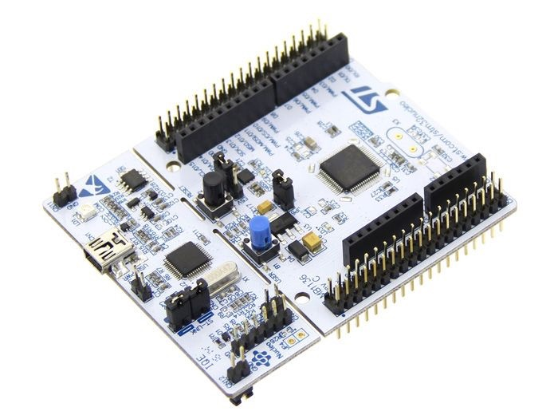
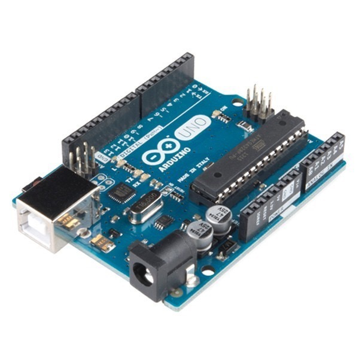
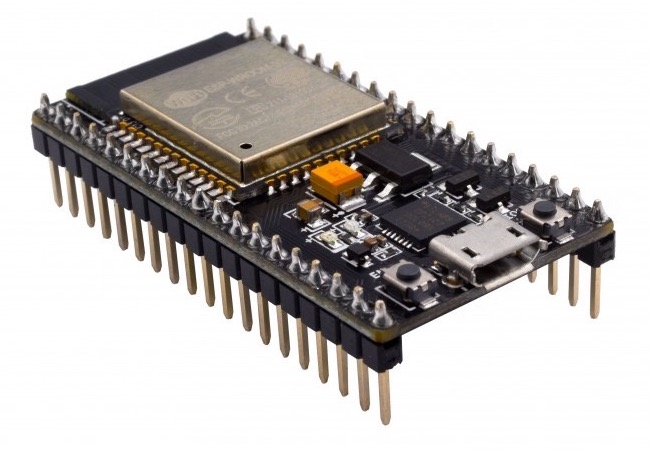
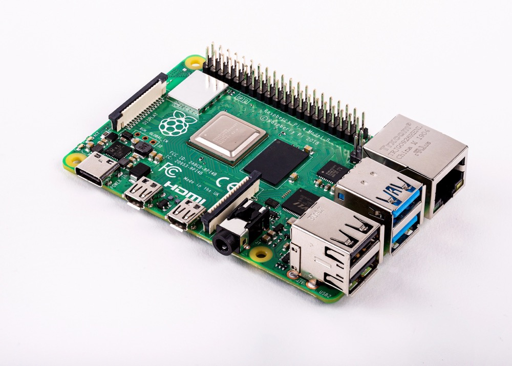
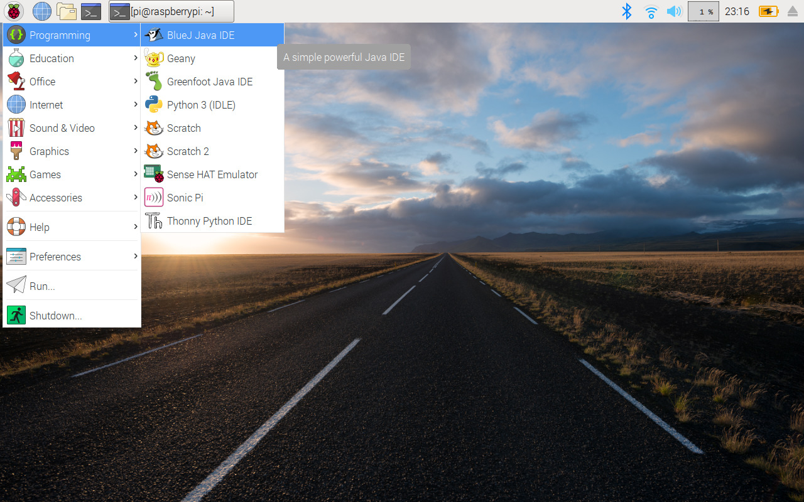
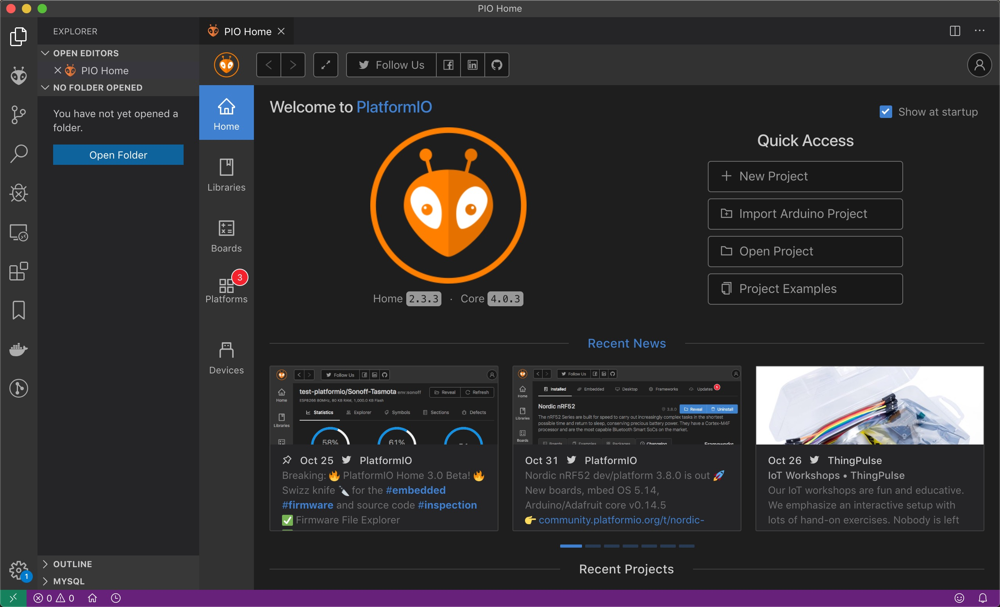
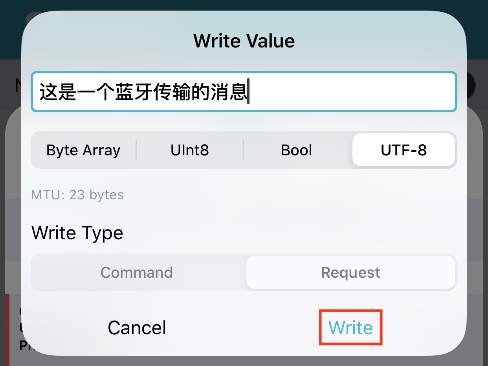
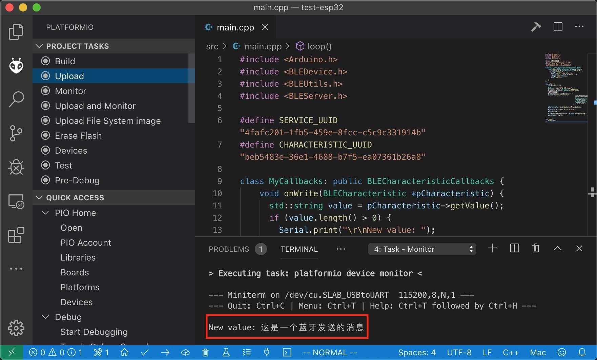
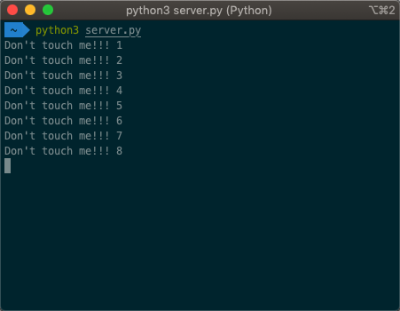

物联网开发¶
当我们在谈论物联网开发时我们在谈论什么？
谈论的前提是明晰物联网系统的架构，我们可以大致将物联网系统拆解为：
- 服务端
- 设备端
- 用户端
服务端提供数据的存储、访问、分析等功能，我们此处所指既包含阿里云物联网平台这样的平台级软件，也包含特定云端应用。
设备端提供应用数据收集、具体操作执行等功能，包括手机、手环、传感器节点等具有计算能力的实际物联网设备。
用户端提供与用户的交互功能，如数据展示、发送指令等，既包括 Web 应用也包括移动端 APP。
服务端和用户端开发与通常的互联网开发类似，因此可以说物联网开发的关键和特别之处便在于设备端的开发。 手机在设备端中算是一个特殊的存在，移动端开发属于另一个长篇故事，读者可以自行探索，我们按下不表。
下面关于物联网的开发将着重于介绍其他大部分设备端的开发。
事实上，下面介绍的几个硬件开发平台中，除了树莓派外，其他均可以认为是嵌入式开发。 制作实际嵌入式产品肯定是还有很多外围电路的，是需要画 PCB 板的，但在原型开发阶段我们可以使用厂商封装好的开发板。
1. 设备端开发平台¶
物联网的硬件是非常丰富的，除了五花八门的传感器，控制器方面也有非常多选择，下面我们列出几个主流的硬件开发平台以供参考。
1.1. STM32¶
STM32 是 ST（STMicroelectronics，意法半导体） 公司设计的基于 ARM Cortex-M 内核的 32 位 MCU（微控制器）系列 ，自带了各种常用通信接口，比如 USART、 I2C、 SPI 等，可接很多的传感器，可以控制很多的设备，使用非常广泛。 现实生活中，我们接触到的很多电器产品都有 STM32 的身影，比如智能手环，微型四轴飞行器，平衡车、移动POS机，智能电饭锅，3D 打印机等等。

1.2. Arduino¶
不论是 IoT 的初学者还是老手，相信大家都听说过 Arduino。 2005年，意大利北部小镇伊夫雷亚（Ivrea）一家高科技设计学校的老师Massimo Banzi（国内创客把他亲切地称为“板子大叔”），为了能给学生们提供一种便宜、好用的微控制器平台，与当时在这所学校做访问学者的西班牙籍芯片工程师David Cuartielles合作设计了最初的Arduino控制板。 随后Arduino便开始迅速地在欧洲流行起来，并且逐渐将春风吹到了世界各地。
Arduino 作为一款便捷灵活、方便上手的开源电子原型平台，包含硬件部分（各种型号的 Arduino 开发板）和软件部分。
Arduino硬件部分：由微控制器（MCU）、闪存（Flash）以及一组通用输入/输出接口（GPIO）等构成。 只是一个最小系统，是用作评估，或者搭建原型用的，如果你把他当作是玩具，也是没问题的。 几乎所有的单片机开发板，你都可以把他当作是“玩具”，因为从硬件构成上讲，和Arduino开发板没有区别。
Arduino软件部分：本质是一个C++编程框架，你可以用他开发多种系列/型号的单片机，常见的如AVR/STM32/MSP430/ESP8266。
Arduino的优势在于社区的强大和众多类库资源。 时至今日，Arduino已经成为Github最多的开源硬件项目框架，其资源和影响力已经让Github都加上了Arduino语言分类。 Arduino 在现实中有着非常多的应用，甚至还被用在了卫星上 ArduSat 。

Arduino的特点：1. 开放性：所有的电路图纸和源代码都公开，任何人都可以修改使用；2. 易用性：采用C++面对对象语言，把所有和底层驱动有关的代码都封装成库，用户只需要简单的逻辑判断和数据处理就可以；3. 可扩展性：丰富的扩展板可以和主板层叠，根据具体需求选用。
总得来说，Arduino更适合DIY、想法验证、快速制造产品原型之类的用途。 用于生产则不太合适，因为它的运行效率较低，无调试功能支持，无原生定时器抽象(必须借助库函数实现，如果同时使用多个定时器会变的非常混乱，失去了Arduino开发简洁的优势)，不适于高速、高实时性、高效率、高资源要求的项目和产品。
1.3. ESP系列¶

ESP系列芯片是我国乐鑫（Espressif Systems）公司设计和生产的物联网MCU，性能强悍，物美价廉。
乐鑫的ESP8266芯片广泛被用于ESP8266 Wi-Fi模块，它是一款具有完整的TCP/IP堆栈和单片机功能的芯片，内置一个Tensilica L106 32-bit RISC处理器(80MHz)，最大时钟速度为160MHz，同时内置了iBus、dBus和AHB接口。 可以使用高达16MB的外部SPI闪存。 ESP8266EX支持14个无线信道和2.4GHz的接收器和发射器。 在Wi-Fi(72.2Mbps)方面，ESP8266EX实现了TCP/IP和完整的802.11 b/g/n WLAN MAC协议(2个虚拟Wi-Fi接口)。
ESP32芯片集成了Wi-Fi和双模式蓝牙，是ESP8266EX的一个升级版。 根据型号差异，ESP32包含一个或两个低功耗Xtensa®32位LX6微处理器，最大时钟速度240MHz(通常是160 MHz)和Xtensa RAM / ROM，本地内存和JTAG接口。 与ESP8266EX不同，ESP32具有不同大小的嵌入式闪存，支持多个外部QSPI闪存和SRAM芯片(最多16MB)。 ESP32的无线功能和ESP8266EX一样，但是增加了一个平衡和收发两用开关。 与ESP8266EX芯片相比，另一个改进是ESP32嵌入了一个RTC时钟，实现了TCP/IP和完整的802.11 b/g/n Wi-Fi MAC协议(4个虚拟Wi-Fi接口)，数据速率可达150mbps，支持旧蓝牙协议和低功耗蓝牙协议。 ESP32芯片集成了丰富的硬件外设，包括电容式触摸传感器、霍尔传感器、低噪声传感放大器，SD卡接口、以太网接口、高速SDIO／SPI、UART、I2S和I2C等。
ESP系列的芯片通常都自带了Wi-Fi和蓝牙模块，这对于物联网通信而言是个先天的优势。
1.4. 树莓派等众多派¶
树莓派（Raspberry Pi, RPI）由英国树莓派基金会开发，是为学习计算机编程教育而设计的一款“卡片机”。 Raspberry（树莓）源于对微型计算机以水果为基础命名的传统，如苹果机。 Pi（派）代表“Python”，因为 Python 是第一个移植到树莓派上运行的程序。
麻雀虽小五脏俱全，树莓派虽然只有信用卡大小，但音频、视频功能都有，接上显示屏和键鼠完全可以认为是一台小型 PC。 树莓派板子上提供的两行排针还可以用来对底层硬件进行操作，这对于嵌入式设备的开发是很有帮助的。

官方操作系统 Raspbian：

2019 年 6 月底，树莓派 4 发布，处理器升级为 1.5 GHz 的博通 BCM2711，增大了板载内存容量（½/4 GB），蓝牙升级为 5.0，拥有 2 个 USB 2.0 接口，2 个 USB 3.0 接口，电源也采用了较新的 USB Type-C 接口，参考价格：400 人民币。
树莓派可以实现很多有意思且实际的应用，如作为家庭影音媒体中心、私人小型服务器，还可以制作一个魔镜。
其他一些类树莓派产品如香橙派、荔枝派、香蕉派等，读者可以自行探索。
2. 嵌入式设备端开发环境——PlatformIO¶
2.1. Why PlatformIO¶
关于开发环境，有的人喜欢用命令行+Vim，有的人喜欢IDE图形界面，也有的人根本不关心开发环境觉得人生苦短只想写Python。
物联网的开发由于嵌入式硬件的不同，各厂商都提供了相应于自家产品的一套开发环境，例如 STM32 的 Keil（只支持 Windows），Arduino 的 Arduino IDE，乐鑫公司的 ESP 工具链。 这些五花八门的工具或 IDE 在用户体验上不尽如人意，且使用一家产品就得新熟悉一个开发环境，极大地增加了学习成本、阻碍了生产力的提高。 针对某一个单片机或开发板开发环境复杂的配置过程，如交叉编译链工具下载、安装和配置，也是嵌入式开发的世界让很多人望而却步的主要原因。 于是 PlatformIO （下称 PIO）出现了。
PIO 致力于提供一个统一的跨平台的开发环境，营造一个用于物联网开发的开源生态系统。 由于它初始只提供命令行接口，因此可以很容易地集成到各主流 IDE 中。 目前还支持远程单元测试和固件更新。
PIO 特点
- 环境易配置或零配置，开发者可以集中精力在应用开发上
- 统一的开发环境与调试器
- 支持 650+ 嵌入式开发板，30+ 开发平台，15+ 框架
- 用户体验上乘
2.2. PIO 安装¶
PIO本身是一个命令行程序，我们可以选用我们认为合适的其他工具来配合PIO进行开发。 在此，我们选用官方推荐的VSCode。
VSCode作为当下十分盛行的文本编辑器，拥有非常丰富且易于安装的插件库。
我们下载安装VSCode后点击左侧边栏的插件图标并搜索PlatformIO IDE，点击安装即可。
在安装成功后PIO会启动一个内嵌的主界面，包含新建工程、导入工程、下载库等按键选项。

2.3. PIO 实践1：Hello World¶
物联网开发，要有“物”也要有“网”。 上面所介绍的平台都可以用来进行开发，而我们提到 ESP 系列一个天生的优势便是直接集成了 - 和蓝牙，因此我们以 ESP32 开发板为例介绍 PlO 的使用。
新建工程，Board选择ESP32-DevKitC，Framework选择Arduino。 在main.cpp中写入如下代码
1 2 3 4 5 6 7 8 9 10 | #include <Arduino.h> void setup() { Serial.begin(9600); } void loop() { Serial.println("Hello world!"); delay(1000); } |
由于当前 PIO 的 Arduino platform release 版没有支持最新版 ESP32，可以使用 staging version 来解决 Hello World 无法正常运行的问题。
即修改 platformio.ini参数为 platform = https://github.com/platformio/platform-espressif32.git#feature/stage
点击左侧PIO图标，在Project Tasks中选择Build来编译该项目。 通过USB数据线连接ESP32开发板，主机应能识别串口，若不能则需要安装相应驱动并修改platformio.ini中的参数monitor_port。 点击Project Tasks中的Upload，下方将显示程序烧录进度。 再点击Project Tasks中的Monitor，我们将看到下方数据窗口输出“Hello World！”。
更多例子可以参考官方提供的 PIO 下 ESP32 开发样例代码。
2.4. PIO 实践2：蓝牙连接¶
在 main.cpp 中写入如下代码：
1 2 3 4 5 6 7 8 9 10 11 12 13 14 15 16 17 18 19 20 21 22 23 24 25 26 27 28 29 30 31 32 33 34 35 36 37 38 39 40 41 42 43 44 | #include <Arduino.h> #include <BLEDevice.h> #include <BLEUtils.h> #include <BLEServer.h> #define SERVICE_UUID "4fafc201-1fb5-459e-8fcc-c5c9c331914b" #define CHARACTERISTIC_UUID "beb5483e-36e1-4688-b7f5-ea07361b26a8" class MyCallbacks: public BLECharacteristicCallbacks { void onWrite(BLECharacteristic *pCharacteristic) { std::string value = pCharacteristic->getValue(); if (value.length() > 0) { Serial.print("\r\nNew value: "); for (int i = 0; i < value.length(); i++) Serial.print(value[i]); Serial.println(); } } }; void setup() { Serial.begin(115200); BLEDevice::init("ESP32 BLE example"); BLEServer *pServer = BLEDevice::createServer(); BLEService *pService = pServer->createService(SERVICE_UUID); BLECharacteristic *pCharacteristic = pService->createCharacteristic( CHARACTERISTIC_UUID, BLECharacteristic::PROPERTY_READ | BLECharacteristic::PROPERTY_WRITE ); pCharacteristic->setCallbacks(new MyCallbacks()); pCharacteristic->setValue("Hello World"); pService->start(); BLEAdvertising *pAdvertising = pServer->getAdvertising(); pAdvertising->start(); } void loop() { delay(2000); } |
依次点击 Build、 Upload、 Monitor 来运行和观察串口输出。
我们在手机上安装 nRF Connect 这个 APP，打开后扫描可以看到有一个名为“ESP32 BLE Example”的 BLE 外围设备。我们连接蓝牙并任意写入一些值，这些值由蓝牙协议传输并串口输出给主机。



在 PlatformIO 的 Monitor 里可以看到传输的值。

2.5. PIO 实践3：Wi-Fi 连接¶
这个例程将结合 ESP32 自带的触摸传感器来介绍 ESP32 的 Wi-Fi 功能。在 main.cpp 中写入如下代码并烧录运行，注意修改 Wi-Fi 的 ssid 和 password，以及 host IP。该代码首先尝试连接 Wi-Fi，在连接成功后每 500 ms 检测一次触摸 GPIO4 上触摸传感器的值，若小于阈值则发送一个 HTTP 请求。
1 2 3 4 5 6 7 8 9 10 11 12 13 14 15 16 17 18 19 20 21 22 23 24 25 26 27 28 29 30 31 32 33 34 35 36 37 38 39 40 41 42 43 44 45 46 47 48 49 50 51 52 53 54 55 56 57 | #include <WiFi.h> const char* ssid = "ssid"; const char* password = "password"; void setup() { Serial.begin(115200); delay(10); // We start by connecting to a WiFi network Serial.println(); Serial.print("Connecting to "); Serial.println(ssid); WiFi.begin(ssid, password); while (WiFi.status() != WL_CONNECTED) { delay(500); Serial.print("."); } Serial.println(""); Serial.println("WiFi connected"); Serial.println("IP address: "); Serial.println(WiFi.localIP()); } const int threshold = 30; const int pin = 4; const int http_port = 8080; const char* host = "192.168.10.2"; void loop() { delay(500); Serial.println(touchRead(pin)); if (touchRead(pin) < threshold) { Serial.print("connecting to "); Serial.println(host); // Use WiFiClient class to create TCP connections WiFiClient client; if (!client.connect(host, http_port)) { Serial.println("connection failed"); return; } // This will send the request to the server client.print(String("GET /") + " HTTP/1.1\r\n" + "Host: " + host + "\r\n" + "Connection: close\r\n\r\n"); client.stop(); Serial.println("closing connection"); } } |
我们另外编写如下 Python 脚步 server.py 以启动一个简单的 HTTP server。
1 2 3 4 5 6 7 8 9 10 11 12 13 14 15 16 17 18 19 20 21 22 | #!/usr/bin/env python3 from http.server import BaseHTTPRequestHandler, HTTPServer cnt = 0 class S(BaseHTTPRequestHandler): def do_GET(self): global cnt cnt = cnt + 1 print("Don't touch me!!!", cnt) def run(server_class=HTTPServer, handler_class=S, port=8080): server_address = ('', port) httpd = server_class(server_address, handler_class) try: httpd.serve_forever() except KeyboardInterrupt: pass httpd.server_close() if __name__ == '__main__': run() |
运行 server.py，将 ESP32 上电。如果我们这时用手指捏住 ESP32的 GPIO4 引脚，我们将看到终端输出“Don't touch me”字样。
